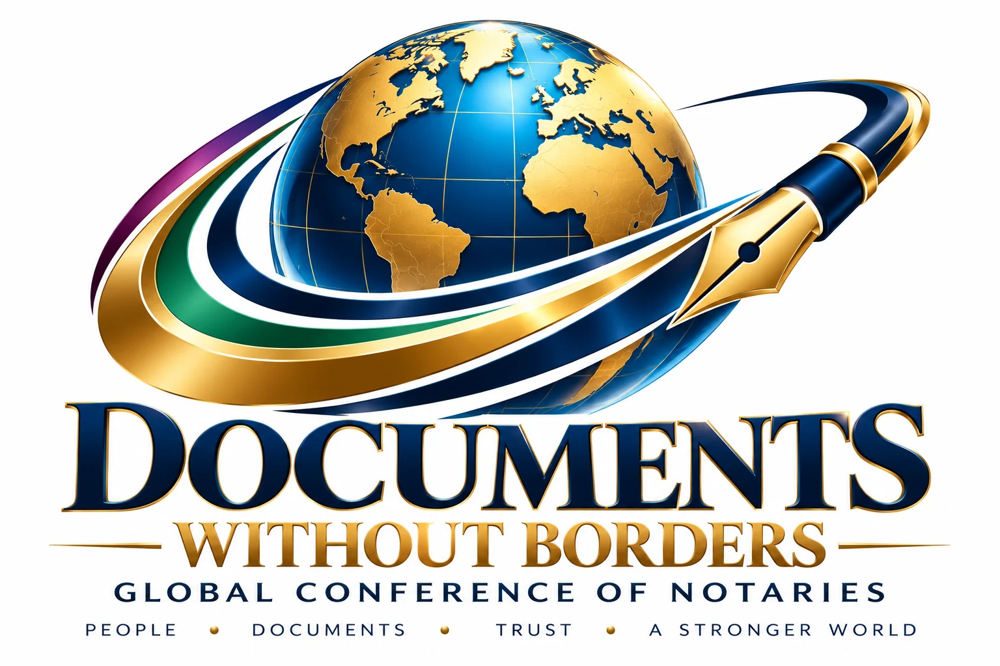

Global systems
Understand different notarial roles, professional regulation and legal responsibilities without conflating authorities.
Global conference
A proposed platform for substantive dialogue among professionals serving under distinct notarial systems.

Proposal · No confirmed event date
Concept stageThe vision is to bring together notaries and related professionals from civil-law, common-law and other legally recognized systems for education, learning and constructive exchange.
A Dubai Notarizationship Summit and a potential future gathering in New York are concepts under exploration. Locations, sponsorship, permissions, registrations and institutional participation are not confirmed.
Discuss participation ↗Possible themes
Understand different notarial roles, professional regulation and legal responsibilities without conflating authorities.
Learn from experts about authentication, apostilles, consular processes and real-world acceptance challenges.
Explore multilingual education, digital tools, trustworthy source information and inclusive professional development.
Early-stage planning
Any summit will require an approved host arrangement, reliable financing, a reviewed educational agenda and participant safeguards. Inviting an institution does not imply its endorsement or attendance.